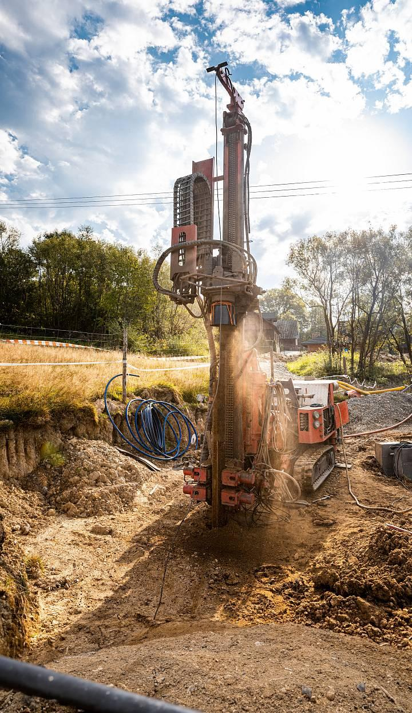
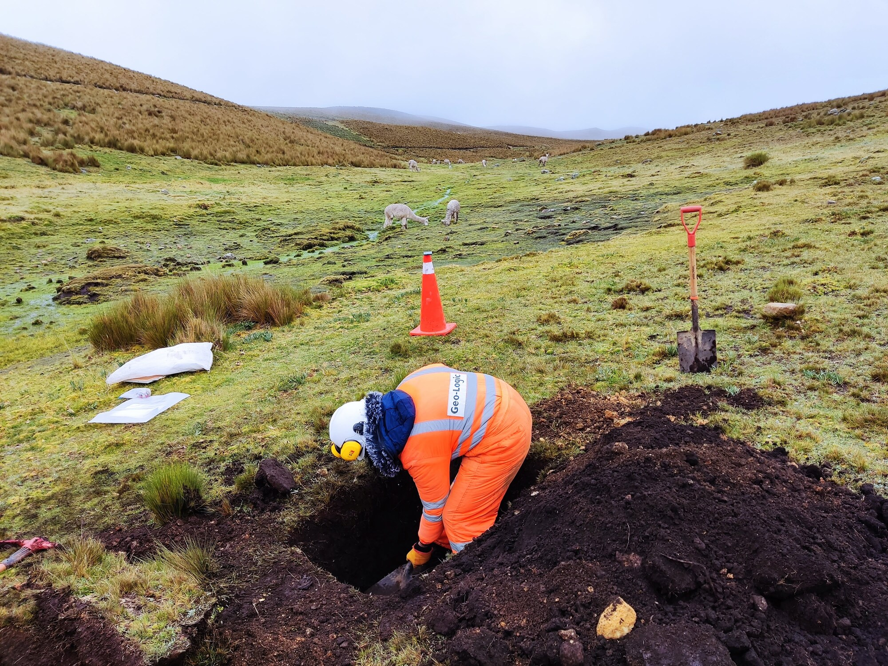
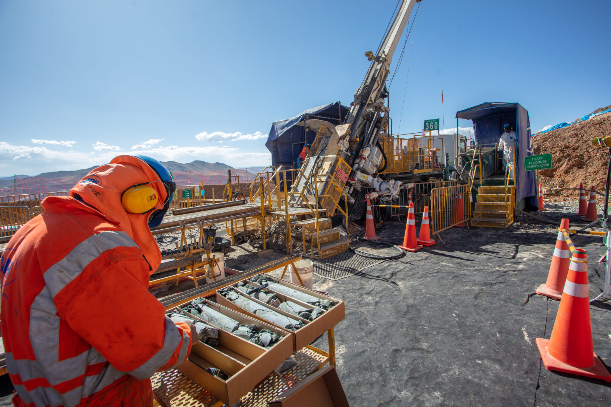
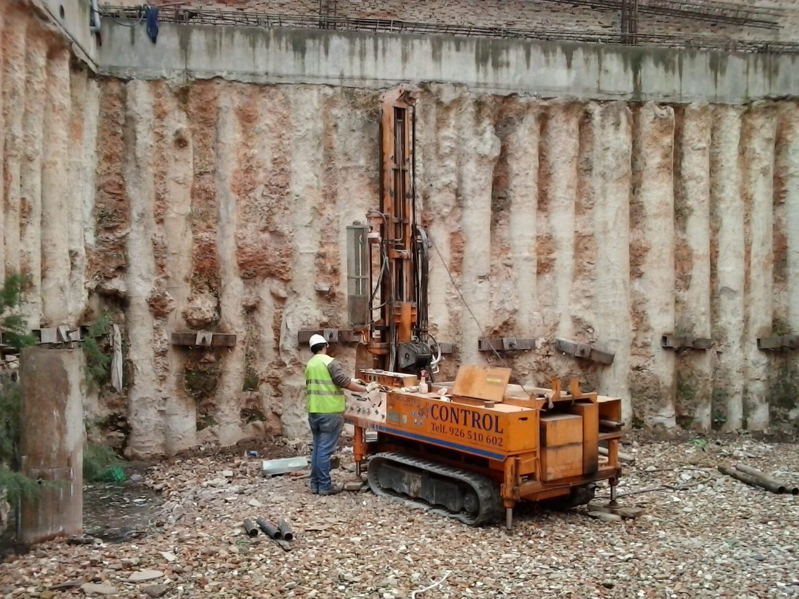

Estudios y soluciones geotécnicas para proyectos de infraestructura, edificación y obra civil.

Antes de construir, es necesario conocer las condiciones del terreno. En INGEOTEEK realizamos estudios y análisis geotécnicos que permiten comprender las características del suelo.
Nuestro enfoque combina exploración de campo, ensayos de laboratorio e interpretación técnica para proporcionar información confiable que respalde el diseño de cimentaciones y obras civiles.

Soluciones técnicas especializadas para cada etapa del proyecto.
Investigación de las condiciones del subsuelo mediante técnicas de exploración como sondeos, perforaciones y muestreo inalterado.
Conocer más →Caracterización de las propiedades físicas y mecánicas del suelo mediante ensayos de laboratorio especializados.
Conocer más →Obtención y análisis de información para apoyar el diseño de proyectos, incluyendo perfiles estratigráficos y parámetros de diseño.
Conocer más →Evaluación del comportamiento del terreno frente a las cargas previstas, determinando la capacidad admisible del suelo.
Conocer más →Información técnica para apoyar la selección y diseño de soluciones de cimentación, incluyendo recomendaciones específicas.
Conocer más →Un proceso metódico para garantizar resultados confiables.
Definimos el alcance y requerimientos del proyecto.
Realizamos la investigación de campo con técnicas especializadas.
Procesamos la información obtenida en laboratorio y campo.
Analizamos las condiciones del terreno y su comportamiento.
Entregamos la información técnica correspondiente al proyecto.
Nuestros servicios se adaptan a las necesidades de cada sector.
Estudios de suelo para naves industriales
Análisis para edificios y estructuras
Estudios para carreteras y puentes
Evaluación para proyectos de gran escala
Análisis para desarrollos urbanos
Estudios para infraestructura de telecom
Conoce algunos de los proyectos que hemos desarrollado.

Alcance: exploración + análisis + recomendaciones
Ver caso de estudio →Alcance: muestreo + ensayos + dictamen
Ver caso de estudio →
Alcance: exploración + capacidad de carga + cimentación
Ver caso de estudio →Amplia trayectoria en proyectos de ingeniería y geotecnia con resultados comprobados.
Análisis orientado a las necesidades específicas de cada proyecto.
Personal capacitado en todas las áreas de la geotecnia.
Integración con otras áreas de ingeniería para un enfoque completo.
Información técnica que respalda la toma de decisiones en tu proyecto.
Contamos con herramientas y equipos especializados para cada fase del estudio.
Equipos de perforación y sondeos
Equipos para ensayos de suelos
Monitoreo y medición en campo
Herramientas de modelado geotécnico
Cuéntanos sobre tu proyecto y nuestro equipo podrá orientarte sobre la solución geotécnica adecuada.
Solicitar estudio geotécnico →